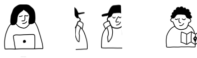
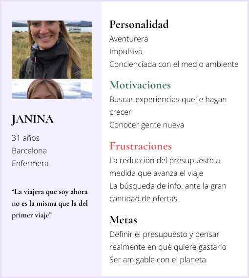
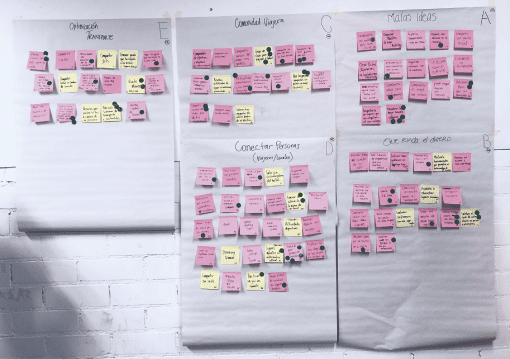
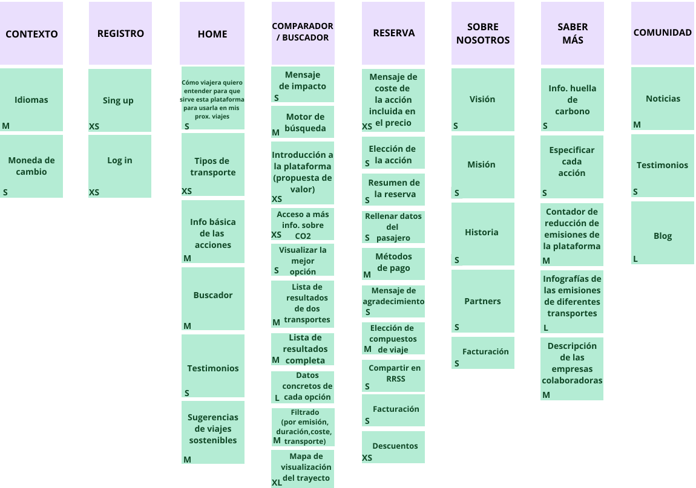
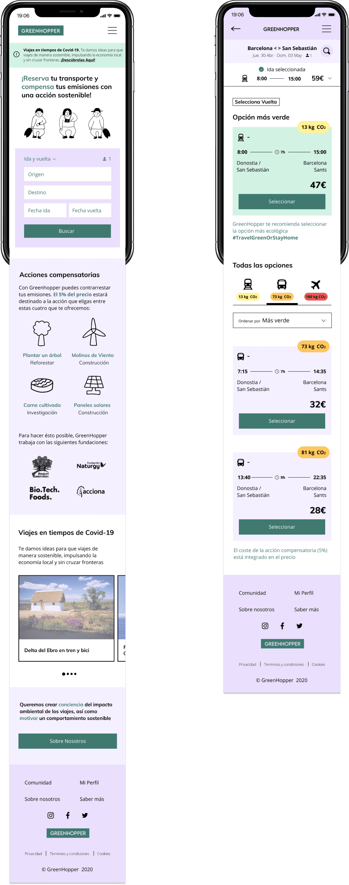
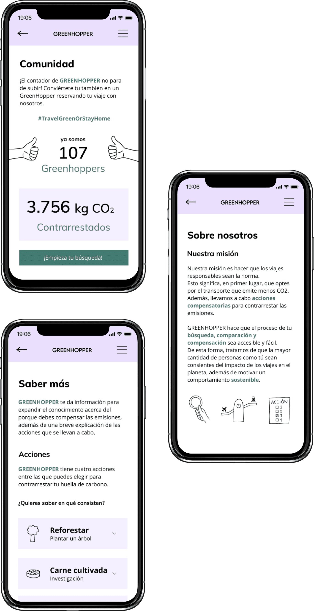

Greenhopper
Diseño de plataforma digital
2019-20, 6 meses, 4 personas
El reto de este proyecto ha sido crear una experiencia digital relacionada con los viajes. Greenhopper es un proyecto para viajeros con conciencia medioambiental, una plataforma que permite comparar las opciones de transporte según su emisión, promoviendo las opciones más sostenibles y ofreciendo la oportunidad de contrarrestar la huella de carbono.
El proyecto se ha desarrollado aplicando técnicas Agile para trabajar de forma iterativa incremental y la metodología Design Sprint, centrándose en las necesidades del usuario.
Contexto
Viajar da espacio a nuevas experiencias y reflexiones, a descubrir diferentes culturas y nuestro planeta mismo, pero tiene consecuencias negativas hacia el medio ambiente.
El transporte al que más se recurre a la hora de viajar es el avión y es el que más CO2 emite comparado con el autobús y el tren.
Exploración
Conversaciones
El proyecto ha comenzado conversando con los diferentes tipos de viajeros identificados. Para ello, se han nombrado los siguientes arquetipos: (1) Nómada digital, (2) Mochilero y (3) Travel solo. En esta primera toma de contacto, han sido seis en número de personas con las que se ha conversado.
Buyer persona
Ideación
Partiendo de los insights obtenidos, se ha comenzado con la ideación. Mediante diferentes técnicas de creatividad, se ha llegado a 97 ideas en total, separados por los temas identificados durante la exploración. Pero mediante las secciones de priorización y viendo el valor que cada idea tendría para el usuario y su coste, se ha elegido la idea de Búsqueda de transporte sostenible.
Estrategia de contenidos
Respecto a la estrategia de contenidos, la plataforma Greenhopper se divide en 8 épicas que se dividen a su vez en 43 historias de usuario que se han diseñado e iterado durante el proceso.
Proceso iterativo incremental
El proceso ha consistido en en 4 releases, en cada una de ellas se han añadido las historias de usuario marcadas en el roadmap y se ha iterado y testeado con usuarios potenciales cada prototipo. De esta manera, la plataforma ha ido creciendo y evolucionando hasta llegar al diseño final.

Diseño final
El proceso ha consistido en en 4 releases, en cada una de ellas se han añadido las historias de usuario marcadas en el roadmap y se ha iterado y testeado con usuarios potenciales cada prototipo. De esta manera, la plataforma ha ido creciendo y evolucionando hasta llegar al diseño final.

Partiendo de los insights obtenidos, se ha comenzado con la ideación. Mediante diferentes técnicas de creatividad, se ha llegado a 97 ideas en total, separados por los temas identificados durante la exploración. Pero mediante las secciones de priorización y viendo el valor que cada idea tendría para el usuario y su coste, se ha elegido la idea de Búsqueda de transporte sostenible.


El proceso ha consistido en en 4 releases, en cada una de ellas se han añadido las historias de usuario marcadas en el roadmap y se ha iterado y testeado con usuarios potenciales cada prototipo. De esta manera, la plataforma ha ido creciendo y evolucionando hasta llegar al diseño final.
¿Hablamos?
Si te gusta lo que ves, no dudes en ponerte en contacto conmigo.
Me encantaría conocerte.